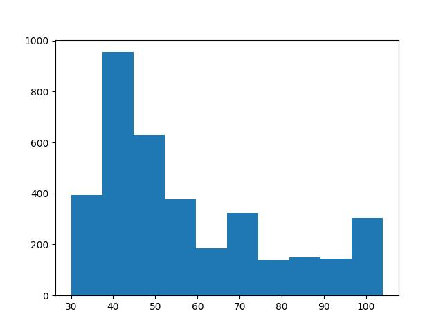
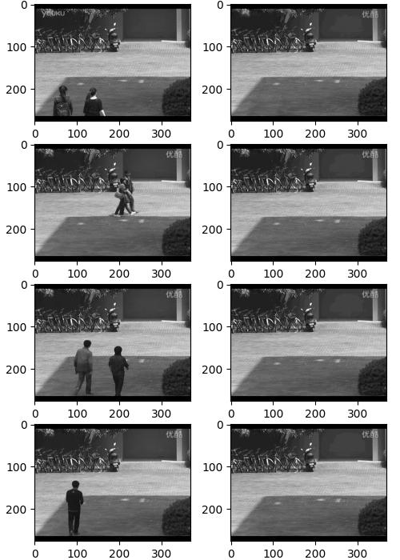
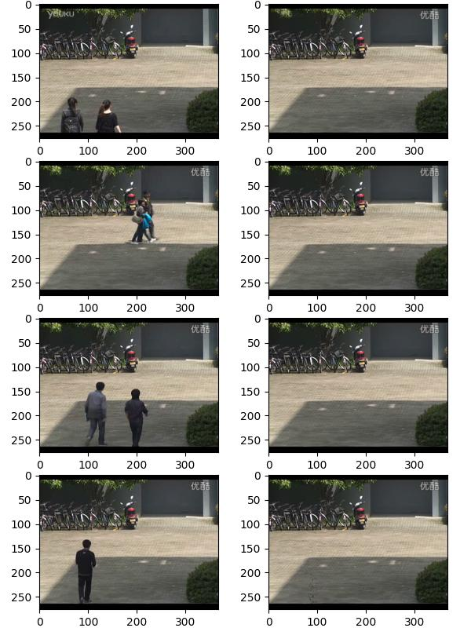
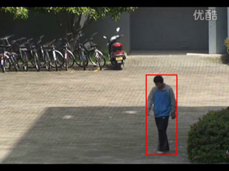

Durağan bir kameranın sürekli aldığı görüntülerde arka plan tespiti (background extraction) yapmak için su andaki en iyi teknikler istatistiki. Ana fikir şu; arka plan demek bir tür değişmezlik, statiklik ima eder, o zaman görüntüdeki her pikselin en çok aldığı piksel değeri (gri seviyesi ise 0..255 arası değerler, RGB ise onun üç boyutlu hali) arka plan olarak kabul edilmelidir.
Tabii ki arka planın önünde, üzerinde farklı objeler gelip gidecektir. Eğer kamera bir yola bakıyorsa, yoldan bazen arabalar geçer, bir kampüs içini gösteriyorsa insanlar yürürler. Bu sebeple her pikselin en çok aldigi değeri matematiksel olarak temsil edebilmemiz gerekiyor.
Örnek olarak bir video’daki spesifik bir pikselin aldığı değerlere bakalım, bu değerlerin histogramını çıkartalım. Bu bize o spesifik pikselin aldığı değerlerin frekansı, istatistiksel özelliği hakkında bir fikir verecektir. Örnek video [1]’den indirilebilir, ve alttaki dizinde olduğunu farzedelim,
vfile = '/opt/Downloads/skdata/campus_vibe_video4.mp4'Video bir kampüste kaydedilmiş, kamera hareket etmiyor sadece önünde
olanları gösteriyor. Şimdi bu video karelerinin coord
noktasındaki, kordinatında aldığı değerlere bakalım. Video renkli ama bu
ilk rapor için biz gri seviyelere bakabiliriz, yani RGB değerlerini alıp
grileştiriyoruz sonra o noktadaki gri değerlere bakıyoruz.
import time, datetime, cv2
cap = cv2.VideoCapture(vfile)
frame_index = 0
N = 3600
coord = (40,130)
pixvals = np.zeros(N)
for i in range(N):
ret, frame = cap.read()
gray_frame = cv2.cvtColor(frame, cv2.COLOR_BGR2GRAY).astype(np.float32)
pixvals[i] = gray_frame[*coord]
cap.release()
plt.hist(pixvals)
plt.savefig('vision_20bg_04.jpg')
Histogram üstteki gibi çıktı. Kabaca ilk bakış bize 45 değeri
etrafında bir gruplanma gösteriyor, 70 etrafında daha az ama yine de
mevcut bir tepe var, bir diğeri 100 etrafında. Yani coord
noktasındaki piksel çoğunlukla köyümsü bir rengi olan bir yeri
gösteriyor, ve arada sırada önünden daha aydınlık renkleri olan şeyler
geçiyor. Belki açık gri renkli tişört giymiş bir kaç öğrenci oradan
geçmiş.
Fakat bu rapor bize arka plan tespitinde izlenebilecek tekniğin ipuçlarını veriyor. Üstteki histograma bakarak eğer bir arka plan seçmek istesek, bunu frekanların maksimum olduğu değer için yapabilirdik, bu örnekte aşağı yukarı 45 değeri.
O zaman şöyle bir yaklaşım tasarlanabilir. Bir video’nun karelerini işlerken her pikselin o ana kadar aldığı değerlerin dağılımını modelle, ve bir arka plan gerektiğinde tüm bu dağılımların maksimum değerini bul (yani maksimum frekansa tekabül eden piksel değeri) ve o değerleri arka plan resmi olarak kabul et. Bu yaklaşımı histogram ile kodlayabilirdik, fakat daha pürüzsüz bir dağılım saptamamıza yardım edecek bir teknik KDE tekniğidir [1]. Bu teknikle aynen histogramda olduğu gibi önceden saptanmış belli \(x\) noktaları (histogram için kutucuk) üzerinden hesap yapıyor olsak bile KDE Gaussian toplamlarını temsil ettiği için daha az ayrıksal gözüken sonuçlar almamızı sağlar.
KDE değerlerini artımsal olarak güncellemeyi de biliyoruz [1], hatta bu güncelleme sırasında eski değerlere daha az önem vermeyi de öğrendik, böylece algoritmamiz güncel olan bir arka plan varsayımını sürekli bilip, istediğimiz anda bize verebilir. Üstte işlediğimiz video üzerinde bunu görelim,
from PIL import Image
import time, datetime, cv2
N = 400 # "hafiza" faktoru (daha yuksek = daha yavas guncelleme)
bandwidth = 40.0 # Gaussian bant genisligi
num_bins = 32 # PDF temsil etmek icin kac tane nokta secelim
bin_centers = np.linspace(0, 255, num_bins).astype(np.float32)
alpha = 1/N
cap = cv2.VideoCapture(vfile)
fps = int(cap.get(cv2.CAP_PROP_FPS))
print(f"Frame rate: {fps} FPS")
pdf_model = None
fig, axes = plt.subplots(nrows=4, ncols=2, figsize=(5,7))
g_row = 0
for frame_index in range(3600):
ret, frame = cap.read()
gray_frame = cv2.cvtColor(frame, cv2.COLOR_BGR2GRAY).astype(np.float32)
H, W = gray_frame.shape
if pdf_model is None:
pdf_model = np.ones((H, W, num_bins), dtype=np.float32) / num_bins
diffs = gray_frame[..., None] - bin_centers[None, None, :]
new_pdf = np.exp(-0.5 * (diffs / bandwidth) ** 2)
new_pdf /= (new_pdf.sum(axis=-1, keepdims=True) + 1e-8) # normalize
pdf_model = (1 - alpha) * pdf_model + alpha * new_pdf
if frame_index in [220,1200,1900,3500]:
background_bins = pdf_model.argmax(axis=-1) # index of most likely bin
background = bin_centers[background_bins].astype(np.uint8)
t = datetime.datetime.now()
print(f"Frame {frame_index}, Time {t}: saving background snapshot")
background_bins = pdf_model.argmax(axis=-1) # index of most likely bin
background = bin_centers[background_bins].astype(np.uint8)
axes[g_row, 0].imshow(gray_frame, cmap='gray')
axes[g_row, 1].imshow(background, cmap='gray')
g_row = g_row + 1
plt.tight_layout(pad=0, w_pad=0, h_pad=0)
plt.savefig('vision_20bg_01.jpg')
cap.release()
cv2.destroyAllWindows()
Resimde sol kolondakiler video’nun belli anlarda alınmış kareleri,
sol kolondaki ise algoritmamizin o andaki arka plan tasavvuru. Görüldüğü
gibi video o anda insanlar gösteriyor olsa bile, KDE kümemiz hala arka
planın ne olduğunu biliyor. Bu saptamayı her piksel için sürekli
hesaplanan KDE’ler üzerinde pdf_model.argmax işleterek
yapıyor. Çağrı argmax bilindiği gibi bir vektör üzerinde
işletilince o vektördeki maksimum değerin indisini verir. Bizim
örneğimizde indis değerleri seçilmiş gri değer seviyelerinin indisi,
mesela bu seviyeler [0., 8.2, 16.4, ..., 255] olabilir eğer
ikinci indisteki frekanslar yüksekse argmax sonucu 8.2
değerini elde ederiz. Not: Gri seviyesi 8.2 anlamsız olabilir fakat 0
ila 255 değerini 32 eşit aralığa bölünce bazı değerler kesirli oluyor.
Problem değil arka plan resmini grafiklerken kesirli gri değerlerini en
yakın tam sayı gri değerine yuvarlayabiliriz.
Üstte parametresiz istatistik kullanarak gri seviyelerini halledebildik. Peki renkli resim işliyor olsaydık ne yapardık? Aynı KDE tekniği burada da işler mi?
Renkli resimler problemli olabilir.. Bu durumda tek gri seviyesi yerine her piksel için üç tane R,G,B değerini takip etmemiz gerekiyor. Eğer aynı KDE yaklaşımını kullanmak istesek ve yine renk skalasını mesela 32 parçaya bolsek, bu bize 32 x 32 x 32 ~ 32K tane nokta verir, ve bu sadece tek piksel içindir. 640 x 480 boyutlu resim kareleri için 640 x 480 x 32 x 32 x 32 yani 10 milyar KDE noktası takip edilmesi gerekecektir. Bu algoritmaya çok fazla yük yaratacaktır. Bu durumda KDE tekniğinden uzaklaşmak gerekiyor.
Fakat temel olarak bize gereken nedir? Bize gereken birden fazla odak noktasi, tepe noktasi olabilen bir dagilim teknigi, ve cok boyutlu verileri rahat bir sekilde halledebilen bir matematiksel yapi.
Gaussian Karışım Modeli [3] bu ihtiyaçları karşılayabilir. Bir Gaussian’ın veri boyutunu 1’den 3 seviyesine çıkartmak onun kapsadığı yer açısından patlama yaratmaz. Gaussian için gereken \(\mu\), \(\Sigma\) parametreleri 1 x 3 ve 3 x 3 boyutundadir, ve bu artış sadece üç katı seviyesinde bir artıştır. Çoklu tepe takip etmek istiyorsak her piksel için bir Gaussian yerine mesela üç Gaussian tasarlayabiliriz, ve onların karışımlarını yine 1 x 3 boyutlu bir “ağırlık vektörü” ile takip edebiliriz. Demek ki her piksel için depolanması gereken rakamlar 1 x 3 + ( 3 x (3 x 3 + 1 x 3)), yani 39. Bu idare edilebilir bir büyüklüktür.
Tekrarlamak gerekirse her piksel seviyesinde bir GMM tasarlıyoruz, ve video’nun her karesindeki piksel RGB değerlerini o piksel GMM’ini güncellemek için kullanıyoruz. Arka plan çıktısı almak gerektiğinde bir GMM’in karışım seviyesi en yüksek olan Gaussian’inin tepe noktasını arka plan RGB değeri olarak kabul ediyoruz.
Ayrıca GMM güncellemesini artımsal olarak ta yapabildiğimiz için [4] geriye dönük olarak sürekli toptan işlem yapılmasına da gerek yok, aynen KDE’lerde olduğu gibi son video karesini alıp onun değerlerini mevcut son GMM modeli üzerinde hızlı güncelleme yapmak için kullanabiliyoruz. EWMA benzeri eski veriye daha az önem verme burada da kullanılabilmekte, böylece en son değerlerin ima ettiği arka plan bulunabilmiş oluyor.
import cv2, time, datetime
K = 3
lambda_forget = 0.005
min_variance = 15.0
snapshot_frames = [220, 1200, 1900, 3500]
resize_width = 640
cap = cv2.VideoCapture(vfile)
ret, frame = cap.read()
if resize_width is not None:
h0, w0 = frame.shape[:2]
scale = resize_width / float(w0)
frame = cv2.resize(frame, (resize_width, int(h0 * scale)))
H, W, C = frame.shape
frame_index = 0
fig, axes = plt.subplots(nrows=4, ncols=2, figsize=(6,8))
g_row = 0
pi_g = np.ones((K, H, W), dtype=np.float32) / K
means = np.zeros((K, H, W, C), dtype=np.float32)
for k in range(K):
noise = np.random.normal(scale=4.0*(k+1), size=(H,W,C)).astype(np.float32)
means[k] = frame.astype(np.float32) + noise
covars = np.ones((K, H, W, C), dtype=np.float32) * 225.0
inv_covars = 1.0 / np.maximum(covars, min_variance)
det_covars = np.prod(covars, axis=-1, keepdims=True)
def diag_gauss_pdf(x, mean, inv_covar, det_covar):
eps = 1e-6
exponent = -0.5 * np.sum((x - mean)**2 * inv_covar, axis=-1)
denom = np.sqrt((2*np.pi)**C * np.maximum(det_covar.squeeze(-1), eps))
return np.exp(exponent) / np.maximum(denom, eps)
eps = 1e-12
for frame_index in range(3550):
ret, frame = cap.read()
if not ret: break
if resize_width is not None:
frame = cv2.resize(frame, (resize_width, int(frame.shape[0]*resize_width/frame.shape[1])))
frame_f = frame.astype(np.float32)
likelihoods = np.zeros((K, H, W), dtype=np.float32)
for k in range(K):
likelihoods[k] = diag_gauss_pdf(frame_f, means[k], inv_covars[k], det_covars[k])
numerator = pi_g * likelihoods
denominator = np.sum(numerator, axis=0, keepdims=True) + eps
responsibilities = numerator / denominator
pi_g = pi_g + lambda_forget * (responsibilities - pi_g)
pi_sum = np.sum(pi_g, axis=0, keepdims=True) + eps
pi_g = pi_g / pi_sum
for k in range(K):
r_k = responsibilities[k]
pi_k = pi_g[k]
denom = np.maximum(pi_k, eps)
ratio = (r_k / denom)[..., None]
delta = frame_f - means[k]
means[k] = means[k] + lambda_forget * ratio * delta
delta_sq = delta * delta
covars[k] = covars[k] + lambda_forget * ratio * (delta_sq - covars[k])
covars[k] = np.maximum(covars[k], min_variance)
inv_covars[k] = 1.0 / covars[k]
det_covars[k] = np.prod(covars[k], axis=-1, keepdims=True)
k_bg = np.argmax(pi_g, axis=0)
rows, cols = np.indices((H, W))
background = means[k_bg, rows, cols].astype(np.uint8)
frame_uint8 = frame.astype(np.uint8)
if frame_index in snapshot_frames:
t = datetime.datetime.now()
print(f"Frame {frame_index}, Time {t}: saving background snapshot")
axes[g_row, 0].imshow(cv2.cvtColor(frame_uint8, cv2.COLOR_BGR2RGB))
axes[g_row, 1].imshow(cv2.cvtColor(background, cv2.COLOR_BGR2RGB))
g_row += 1
plt.tight_layout(pad=0, w_pad=0, h_pad=0)
plt.savefig('vision_20bg_02.jpg')
cap.release()
cv2.destroyAllWindows()
Sonuçlar üstte görülüyor. Aynı fotoğraf karelerinde bu sefer renkli olarak arka plan çıktısı alabildik. GMM doğru bir arka plan hipotezini bulmayı başardı.
Canlı Video’da Hareket Eden Bölge Tespiti
Eğer bir video’da canlı olarak hareket eden cisimleri, kişileri takip
etmek istesek arka plan tespiti bu ihtiyaç için faydalı, sonuçta hareket
eden bölgeler o ana kadar bilinen arka plan resminden “farklı olan”
pikseller diye tanımlanabilir. Alttaki kod tam da bunu yapıyor. O andaki
video karesi ile arka plan arasında absdiff hesabı yapıyor,
elde edilen piksel kordinatları üzerine bazı ek işlemler yaparak (ufak
bölgeleri atmak, çok az farkları elemek) geri kalan bölgeler etrafında
bir kırmızı dikdörtgen çiziyor. Sonuç altta görülebilir.

Kaynaklar
[1] Video 1
[2] Bayramli, Istatistik, Parametresiz İstatistik (Nonparametric Statistics)
[3] Bayramli, *Istatistik, Gaussian Karışım Modeli (GMM) ile Kümelemek
[4] Bayramli, *Istatistik, Artımsal (Incremental) GMM